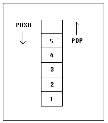

Уроки Ассемблера 8086 для начинающих (Часть 9)
Стек
Перевод: Поляков А.В. http://www.avprog.narod.ru
Стек - это область памяти для хранения временных данных. Стек используется командой CALL для хранения адреса, чтобы программа могла вернуться к тому месту, откуда была вызвана процедура. Команда RET получает этот адрес из стека и возвращает управление по этому смещению. то же самое происходит, когда команда INT вызывает прерывание, она записывает в стек регистр флагов, сегмент и смещение кода. Команда IRET используется для возвращения после вызова прерывания.
Вы можете использовать стек для хранения любых данных. Для работы со стеком имеются две команды:
PUSH - записывает 16-ти битовое значение в стек.
POP - получает 16-ти битовое значение из стека.
Синтаксис для команды PUSH:
PUSH REG
PUSH SREG
PUSH memory
PUSH immediate
REG: AX, BX, CX, DX, DI, SI, BP, SP.
SREG: DS, ES, SS, CS.
memory: [BX], [BX+SI+7], 16-ти битовая переменная и т.п...
immediate: 5, -24, 3Fh, 10001101b, и т.п...
|
Синтаксис для команды POP:
POP REG
POP SREG
POP memory
REG: AX, BX, CX, DX, DI, SI, BP, SP.
SREG: DS, ES, SS, (кроме CS).
memory: [BX], [BX+SI+7], 16-ти битовая переменная и т.п...
|
Примечания:
•Команды PUSH и POP работают только с 16-ти битовыми значениями!
•Примечание: PUSH immediate работает только на процессорах 80186 и выше!
Стек использует алгоритм LIFO (Last In First Out - Последним пришел - первым ушел), это значит, что если мы поместим эти значения одно за другим в стек:
1, 2, 3, 4, 5
то первым значением, которое мы можем получить из стека, будет 5, затем 4, 3, 2 и только потом 1.

Очень важно применять равное количество команд PUSH и POP, иначе стек может быть нарушен и невозможно будет вернуться в операционную систему. Как вы уже знаете, мы используем команду RET для возвращения в операционную систему. Когда программа запускается, ее адрес записывается в стек (обычно это 0000h).
Команды PUSH и POP чрезвычайно полезны, т.к. для хранения данных обычно недостаточно только регистров. Вот выход из ситуации:
•Записать значение регистра в стек (используя PUSH).
•Использовать этот регистр в своих целях.
•Восстановить предыдущее значение регистра из стека (используя POP).
Пример:
ORG 100h
MOV AX, 1234h
PUSH AX ; записать значение из AX в стек.
MOV AX, 5678h ; изменить значение регистра AX.
POP AX ; восстановить первоначальное значение AX.
RET
END
|
Стек можно также использовать для того, чтобы поменять местами значения в регистрах:
ORG 100h
MOV AX, 1212h ; записать в АХ число 1212h.
MOV BX, 3434h ; записать в ВХ число 3434h.
PUSH AX ; записать значение AX в стек.
PUSH BX ; записать значение ВX в стек.
POP AX ; установить в AX значение BX.
POP BX ; установить в ВX значение АX.
RET
END
|
Обмен данными происходит потому, что стек использует алгоритм LIFO (Последним пришел - первым вышел), поэтому когда мы помещаем в стек число 1212h, а затем - 3434h, то при обращении к стеку мы сначала получим число 3434h, и только потом - 1212h.
Область памяти стека устанавливается при помощи регистров SS (Stack Segment - сегмент стека) и SP (Stack Pointer - указатель стека). Обычно операционная система устанавливает значения этих регистров на начало программы.
Команда "PUSH источник" делает следующее:
•Вычитает 2 из регистра SP.
•Записывает значение источника по адресу SS:SP.
Команда "POP приемник" делает следующее:
•Записывает данные, размещенные по адресу SS:SP в приемник.
•Увеличивает на 2 значение регистра SP.
Текущий адрес указателя в SS:SP называется вершиной стека.
Для COM-файлов сегмент стека - это обычно и сегмент кода, а указатель стека установлен в значение 0FFFEh. По адресу SS:0FFFEh записывается адрес возврата для команды RET, которая выполняется в конце программы.
Вы можете наблюдать за работой стека, щелкнув по кнопке [Stack] в окне эмулятора. Вершина стека отмечена знаком "<".
<<< Предыдущая часть <<< >>> Следующая часть >>>
|